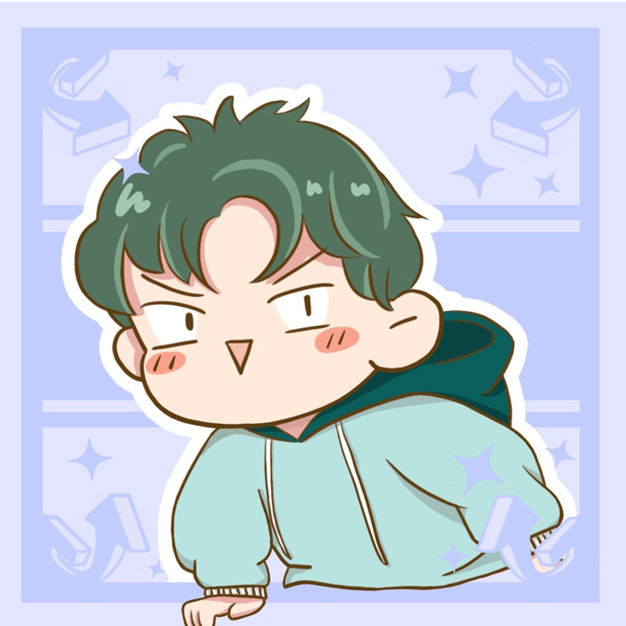
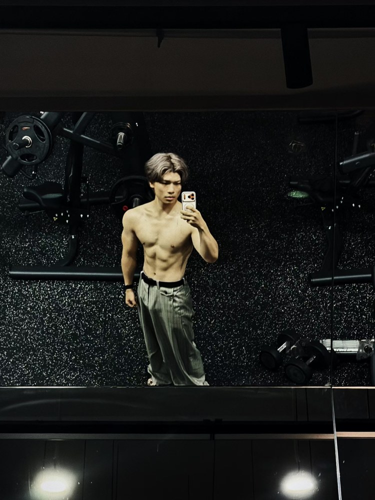

985 中文系在读，同时也是个 0→1 的校园创业者。写过 5.3w 用户的产品，做过万人参与的直播，拿过国家级赛事第一名。相信文字与数据，能把一件事真正做成。

我来自湖南永州，在广西一个被喀斯特群山环抱的小城长大。那里教会我——越是平实的地方，越藏着能把事情做成的韧劲! 后来我来到成都，在川大读中文，却一头扎进了互联网与创业。我喜欢把浪漫的表达和理性的数据揉在一起，去做一些真正被需要的东西。
中文系的表达底子 + 创业实战磨出来的运营手感 + 正在进化的技术能力。
从校园学生工作，到带队做产品，再到一个人打一场仗。
那些从 0 长出来、真正留下痕迹的东西。
把时间花在真正值得的地方。
作为联合发起人，我在打磨这个从 0 走到 5.3w 用户的校园产品——迭代功能、沉淀可复用的运营 SOP，也在思考它更长远的样子。
正在用 AI 辅助的方式学习编程与产品搭建——让工具为我所用，把脑子里的想法更快变成能跑起来的东西。
在学习 solopreneur 的思路：一个人也能靠产品与内容，活成一家公司。
创业和创作都需要好状态，坚持健身，把体能当成长期投资。

👆 点地图上的彩色圆点，看看那里留下的照片和当时的感受
这里没有大城市的喧嚣，却有最清澈的山水。喀斯特地貌的峰丛与溪流，塑造了我对世界的初印象——也让我学会在安静的土壤里，慢慢长出属于自己的东西。
地理上的来处。柳宗元笔下「永州之野」的土地，一种朴素的文人气质，或许也悄悄长进了我的骨子里。
云贵川基本都走遍了。在四川求学、在云南贵州看山看云、吃遍街头巷尾。西南的烟火气，是我最熟悉的生活底色。
七天自驾，从青海湖到茶卡、到敦煌的戈壁与鸣沙山。车轮碾过荒芜，才懂得辽阔的意义。那是我见过最震撼的风景，也让我确信——人要多去旷野里走走。
我把这些爱好排成三行：从身体出发，让眼睛接住，再用嘴把它唱出来——最后一把火留给自己。
想聊聊合作、产品、文字，或者只是交个朋友——都欢迎。